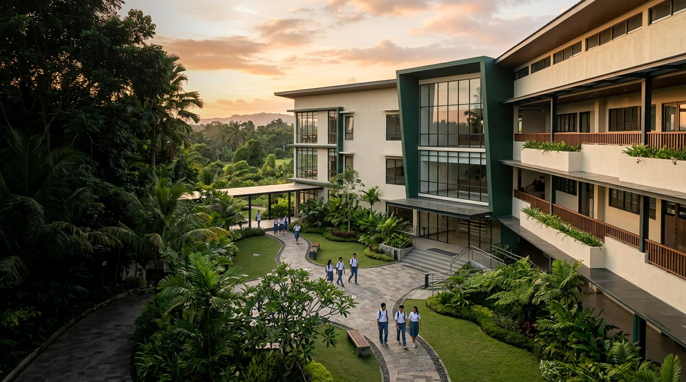
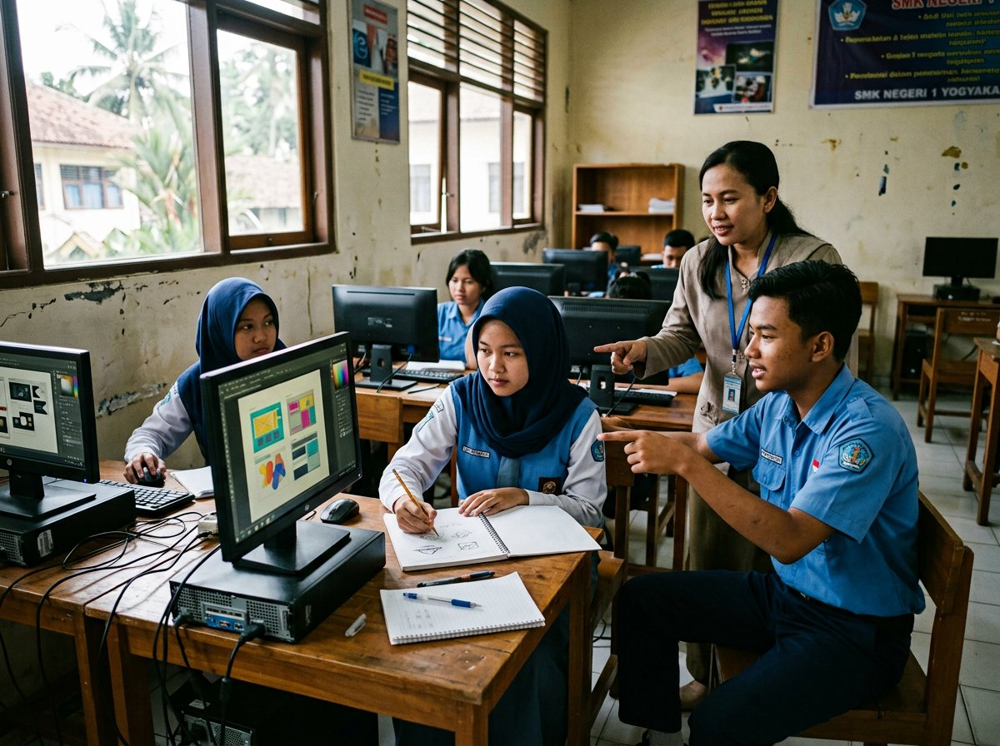
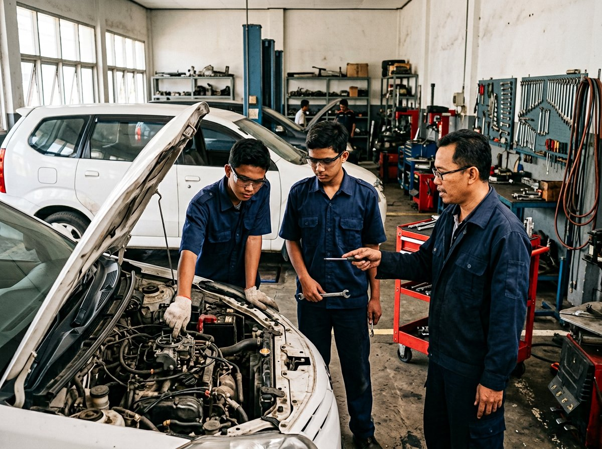
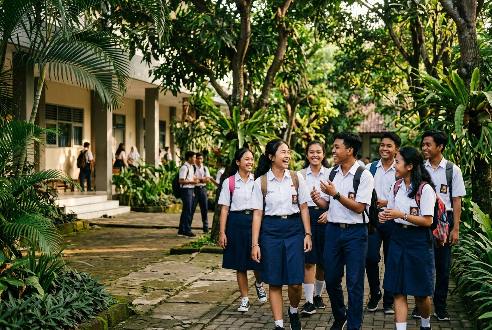
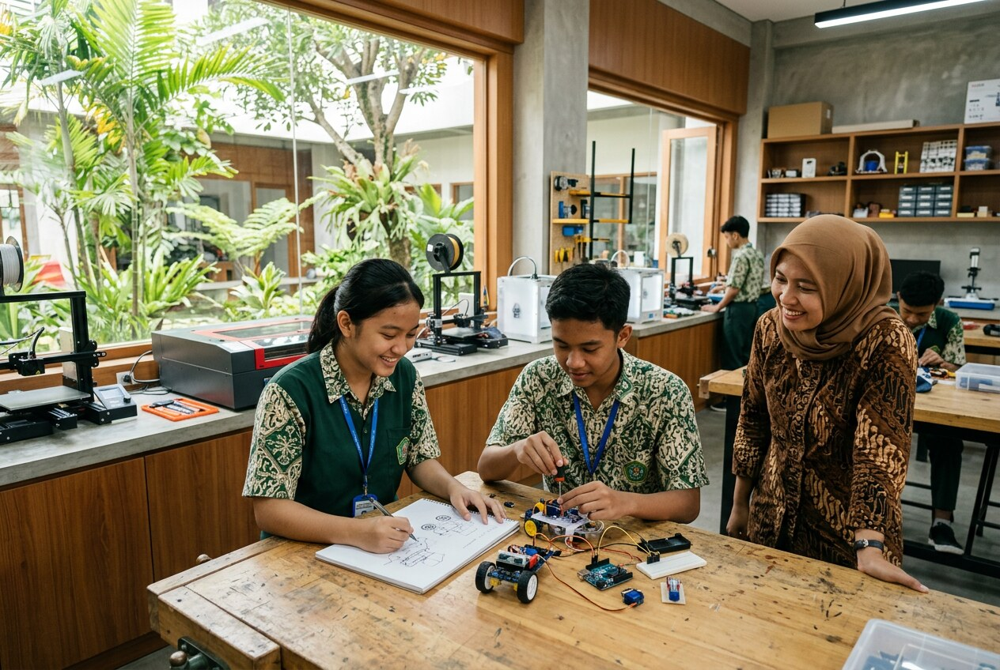
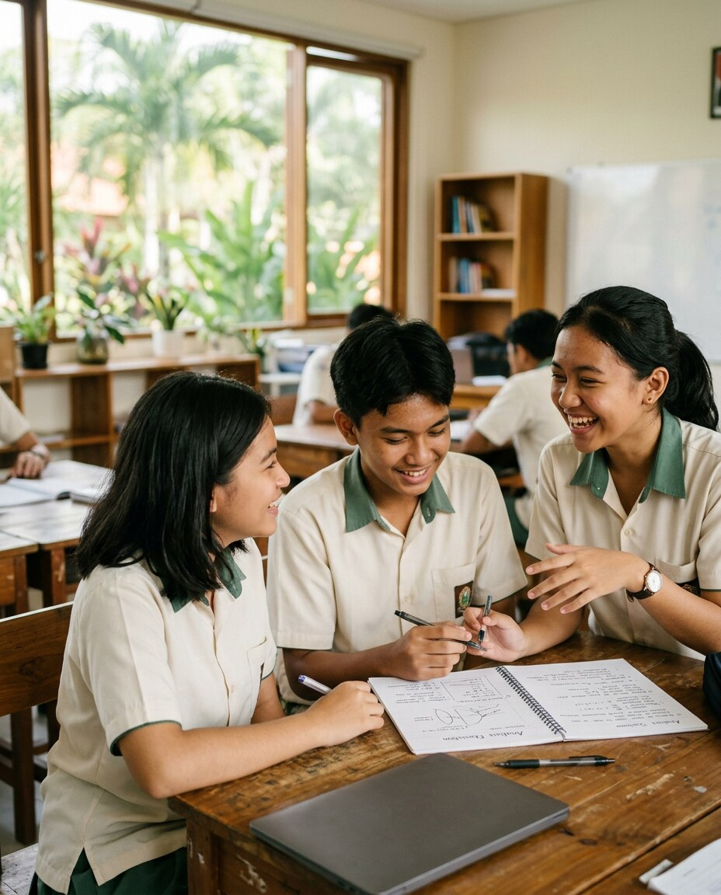

Program KeahlianDKV & TKR

SMK TERPADU PONPES ASY-SYAFI'IYAH · LOHGUNG
Terampil berkarya,
berkarakter JUARA.
JUARAJujurUnggulAdaptifReligiusAmanah
Kembangkan kompetensi kejuruan dan karakter baik dalam lingkungan belajar yang memadukan keterampilan, nilai, dan kehidupan pesantren.
Lohgung · Brondong · Lamongan, Jawa Timur
Nilai JUARAJujur hingga Amanah
NPSN SekolahIdentitas resmi
Swasta · Terpadu PonpesLohgung, Lamongan
PROGRAM KEAHLIAN
Pilih bidang. Bangun masa depan.
Kenali dua program keahlian yang menggabungkan pengetahuan, praktik, kreativitas, dan kesiapan kerja.

01KREATIVITAS · KOMUNIKASI · KARYAKOMPETENSI KEAHLIAN
Desain Komunikasi Visual DKV
Belajar mengolah ide menjadi pesan visual melalui desain grafis, fotografi, videografi, dan produksi konten.
Desain grafisFotografi & videoProduksi media
Tanyakan program DKV

02KETERAMPILAN · KETELITIAN · PRAKTIKKOMPETENSI KEAHLIAN
Teknik Kendaraan Ringan TKR
Mengenal sistem kendaraan dan proses perawatan melalui pembelajaran teknik, ketelitian, dan praktik.
Perawatan mesinSistem kelistrikanServis kendaraan
Tanyakan program TKR
FASILITAS & LINGKUNGAN
Ruang yang mendukung proses belajar.
Kenali ruang untuk berkarya, bereksplorasi, dan mengembangkan keterampilan.

Ilmu, keterampilan,
dan pembinaan karakter.
dan pembinaan karakter.
TENTANG SEKOLAH
Pendidikan kejuruan dalam naungan nilai pesantren.
SMK Terpadu Ponpes Asy-Syafi'iyah mengembangkan keterampilan sekaligus membiasakan nilai baik dalam keseharian.
Berlokasi di Desa Lohgung, Kecamatan Brondong, Kabupaten Lamongan, sekolah mempersiapkan peserta didik melalui dua kompetensi keahlian dan pembinaan karakter yang berlandaskan nilai pesantren.
NAMASMK Terpadu Ponpes Asy-Syafi'iyah
ALAMATJl. Masjid At-Taqwa, Desa Lohgung, Brondong, Lamongan
KEHIDUPAN PESANTREN
Belajar keterampilan, bertumbuh dalam adab.
IDENTITAS SEKOLAH
Nilai JUARA
Lima nilai yang menjadi arah dalam belajar, berkarya, dan hidup bersama.
Jujur
Jujur dalam belajar, ujian, dan praktik.
Unggul
Berusaha menghasilkan karya dan prestasi terbaik.
Adaptif
Terus belajar mengikuti teknologi dan perubahan.
Religius
Menjaga iman, adab, dan akhlak dalam keseharian.
Amanah
Bertanggung jawab atas tugas, alat, dan kepercayaan.
TENAGA PENDIDIK
Guru profesional,
pendamping bertumbuh.
Kenali para pendidik dan pembina yang mendampingi proses belajar, praktik, dan pembentukan karakter.

DKVPENDIDIK KEJURUAN
Pengajar DKV
Desain visual · Fotografi · Produksi mediaTKR
PENDIDIK KEJURUAN
Pengajar TKR
Otomotif · Perawatan kendaraan · Praktik bengkelJUARA
PENDIDIKAN KARAKTER
Pembina Pesantren
Adab · Kedisiplinan · Pembinaan akhlakKABAR & INFORMASI
Cerita dari ruang belajar.
Sorotan tentang program keahlian, nilai sekolah, dan pengalaman belajar di Asy-Syafi'iyah.
Berlangganan RSSMengubah ide menjadi komunikasi visual
Kenali ruang belajar desain, fotografi, dan produksi media yang membentuk gagasan menjadi karya.
Lihat jurusan DKVKeterampilan otomotif dibangun lewat praktik
Pelajari dasar perawatan kendaraan dan sikap teliti yang dibutuhkan di bidang otomotif.
Lihat jurusan TKR
NILAI JUARABelajar dengan ilmu, bertumbuh dengan adab
Nilai JUARA menjadi pengingat untuk menjaga kejujuran, tanggung jawab, dan kepedulian.
Kenali nilai JUARAGALERI & VIDEO
Momen belajar, cerita bersama.
TUMBUH & BERKONTRIBUSI
Bekal baik untuk langkah besar.
Keterampilan, karakter, dan kepedulian menjadi bagian dari perjalanan setiap murid.
Terampil
Mengembangkan kompetensi DKV dan TKR.
Berkarakter
Membiasakan nilai JUARA dalam keseharian.
Siap Berkarya
Menghubungkan ilmu dengan kebutuhan dunia kerja.
CERITA & PENCAPAIAN
Menghargai proses dan pencapaian.
Setiap karya, langkah belajar, dan pengalaman memberi inspirasi untuk bertumbuh.
Karya & Prestasi
Kenali karya kreatif, praktik kejuruan, dan pencapaian siswa.
Suara Komunitas
Pengalaman siswa, alumni, dan keluarga tentang perjalanan belajar.
AGENDA SEKOLAH
Jadwal dan informasi penting.
Informasi agenda dan tanggal kegiatan akan diperbarui melalui kanal resmi sekolah.
INFOSEKOLAH
AGENDA & KEGIATAN
Ikuti kabar kegiatan sekolah.
Jadwal dan informasi terbaru tersedia melalui kanal resmi sekolah.
Ikuti Instagram @skapsyaPENERIMAAN PESERTA DIDIK BARU
Mulai langkahmu bersama JUARA.
Tanyakan jurusan, persyaratan, jadwal, dan alur pendaftaran langsung kepada sekolah.
EMAIL SEKOLAHsmk.lohgung@gmail.com
Tim sekolah dapat membantu memberikan informasi persyaratan dan jadwal terbaru melalui email.